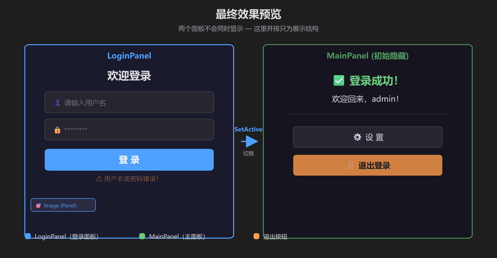
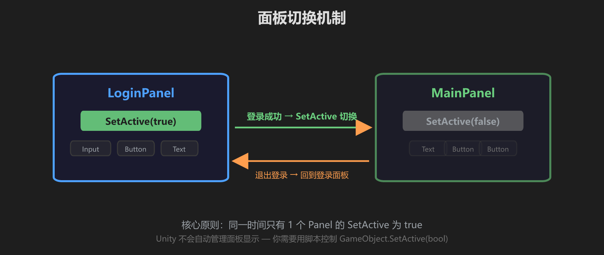
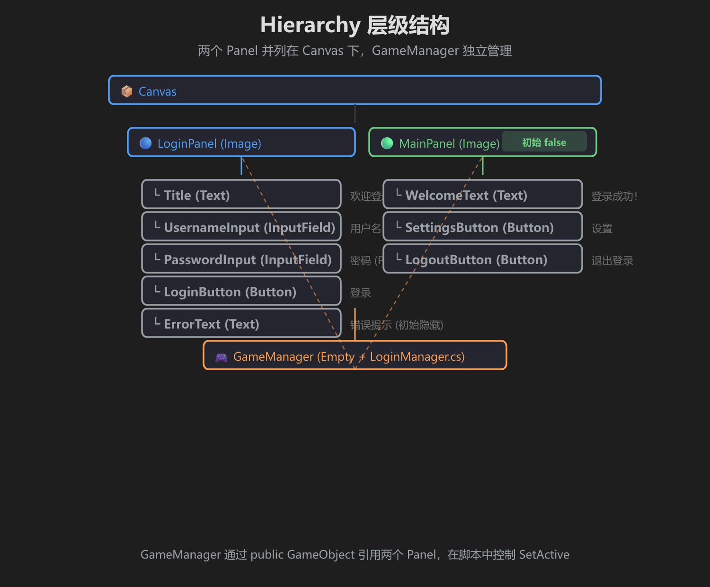
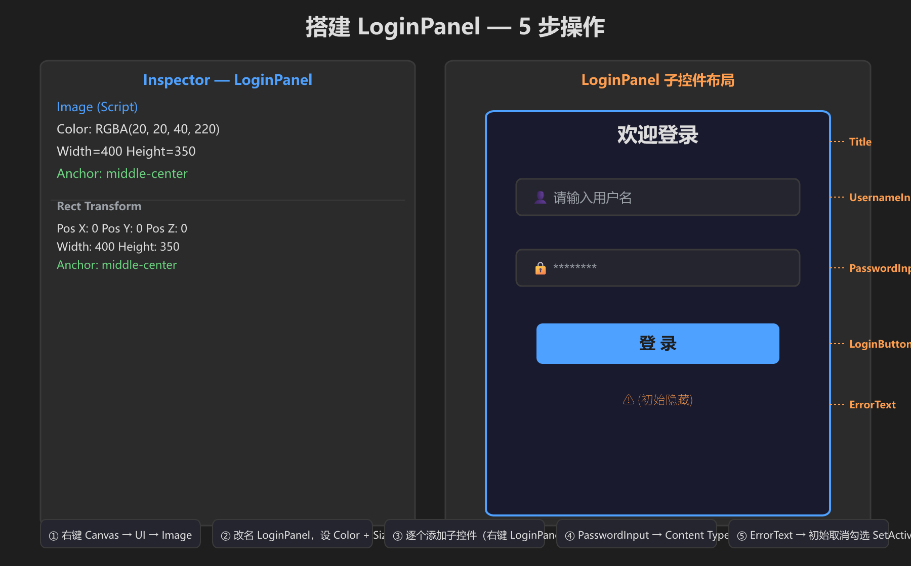
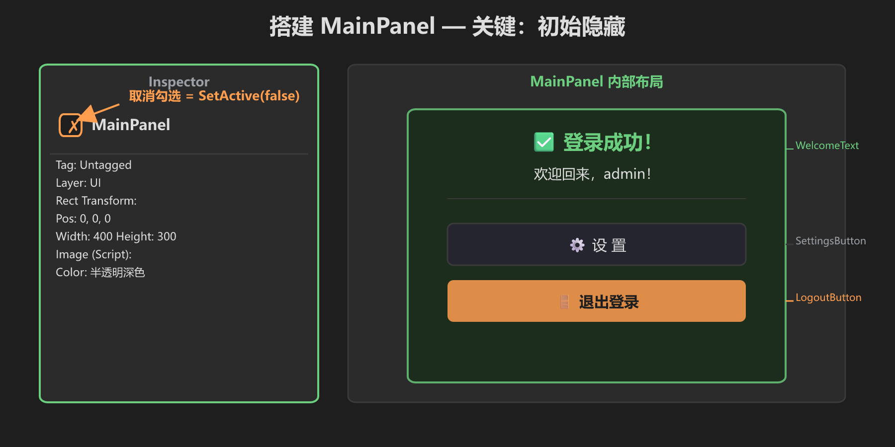
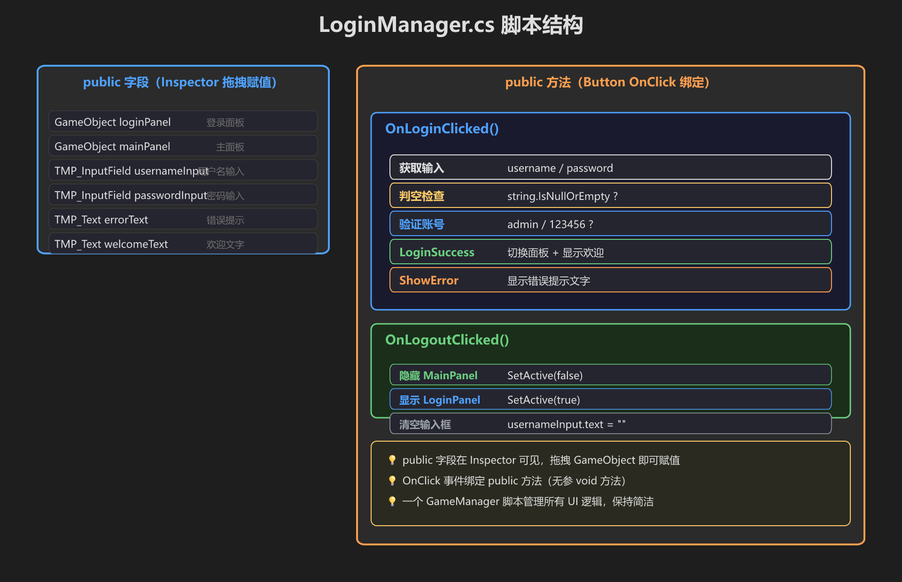
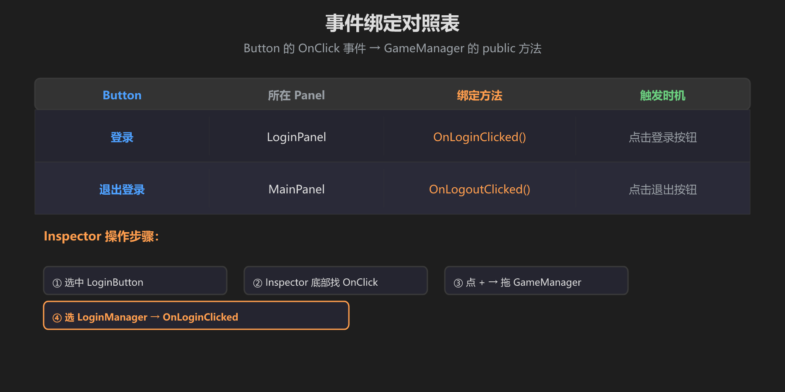
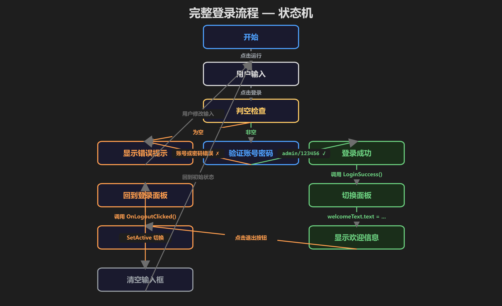
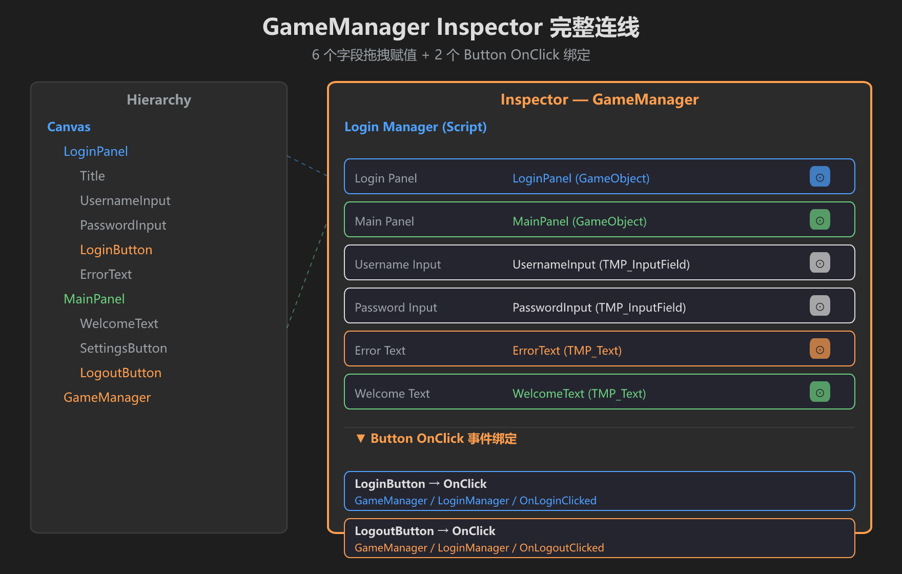

第 6 篇：综合小项目 — 登录界面 + 主界面切换
把前五篇学的 Canvas、Text、Button、Image、InputField 全部用上，做一个完整的登录流程。
🎯 最终效果预览

两个面板不会同时显示 — 这里并排只为看清结构
🔄 核心机制：面板切换
同一时间只有 1 个面板的 SetActive 为 true。

登录成功 → 隐藏 LoginPanel、显示 MainPanel；退出 → 反向操作
🌳 Hierarchy 层级结构

两个 Panel 并列在 Canvas 下，GameManager 独立管理所有逻辑
🔨 搭建 LoginPanel

5 步：创建 Image → 改名 → 设尺寸颜色 → 加子控件 → 密码设 Password
- 右键 Canvas → UI → Image，改名 LoginPanel
- Color: RGBA(20, 20, 40, 220)，Width=400，Height=350，Anchor 居中
- 逐个添加子控件（右键 LoginPanel）：Title / UsernameInput / PasswordInput / LoginButton / ErrorText
- PasswordInput → Content Type 选 Password
- ErrorText → 初始取消勾选（Inspector 最上面）
🔨 搭建 MainPanel

关键一步：Inspector 最上方取消勾选 = 初始 SetActive(false)
- 右键 Canvas → UI → Image，改名 MainPanel
- 设半透明背景，Width=400，Height=300，居中
- 取消勾选 Inspector 顶部的复选框（初始隐藏）
- 添加子控件：WelcomeText / SettingsButton / LogoutButton
📜 LoginManager.cs 脚本

6 个 public 字段（Inspector 拖拽）+ 2 个 public 方法（Button OnClick）
在 Canvas 下创建空物体 GameManager，挂上 LoginManager.cs：
using UnityEngine;
using UnityEngine.UI;
using TMPro;
public class LoginManager : MonoBehaviour
{
// === 6 个 public 字段 — Inspector 拖拽赋值 ===
public GameObject loginPanel;
public GameObject mainPanel;
public TMP_InputField usernameInput;
public TMP_InputField passwordInput;
public TMP_Text errorText;
public TMP_Text welcomeText;
// === 登录按钮 ===
public void OnLoginClicked()
{
string u = usernameInput.text.Trim();
string p = passwordInput.text;
if (string.IsNullOrEmpty(u)) { ShowError("用户名不能为空！"); return; }
if (string.IsNullOrEmpty(p)) { ShowError("密码不能为空！"); return; }
if (u != "admin" || p != "123456") { ShowError("用户名或密码错误！"); return; }
// 登录成功
errorText.gameObject.SetActive(false);
loginPanel.SetActive(false);
mainPanel.SetActive(true);
welcomeText.text = "欢迎回来，" + u + "！";
}
// === 退出按钮 ===
public void OnLogoutClicked()
{
mainPanel.SetActive(false);
loginPanel.SetActive(true);
usernameInput.text = "";
passwordInput.text = "";
errorText.gameObject.SetActive(false);
}
void ShowError(string msg)
{
errorText.text = msg;
errorText.gameObject.SetActive(true);
}
}🔗 事件绑定

每个 Button 的 OnClick 绑定到 GameManager 的对应方法
🗺️ 完整运行流程

从输入到登录成功的完整状态转换
🔌 Inspector 连线总览

6 个字段拖拽 + 2 个 OnClick 绑定 — 一步到位
🌐 如果这是 VRChat 世界项目
上面用的是普通 C# MonoBehaviour，适合在 Unity 编辑器里快速验证逻辑。但 VRChat 世界里，UI 事件只能调用 VRChat 允许的目标方法，所以要把脚本改成 UdonSharp：
- 脚本继承
UdonSharpBehaviour - 登录/退出按钮的 OnClick →
UdonBehaviour.SendCustomEvent("OnLoginClicked")和"OnLogoutClicked" - 方法保持
public void，且不带参数 - 字段仍然拖拽到 Inspector
核心逻辑不用变：SetActive 控制面板显隐，public 字段拖拽赋值，事件绑定到 public 方法。唯一区别是“用 SendCustomEvent 转发给 UdonSharp”。
✅ 自检清单
- [ ] 两个面板不会同时显示
- [ ] 空输入时显示对应错误提示
- [ ] admin / 123456 能成功登录
- [ ] 登录后看到欢迎文字
- [ ] 点退出回到登录界面，输入框清空
🎉 恭喜！你用一个 GameManager 脚本 + 两个 Panel 就做出了完整登录流程。核心就一句话：SetActive 控制面板显隐，public 字段拖拽赋值，OnClick 绑定 public 方法。